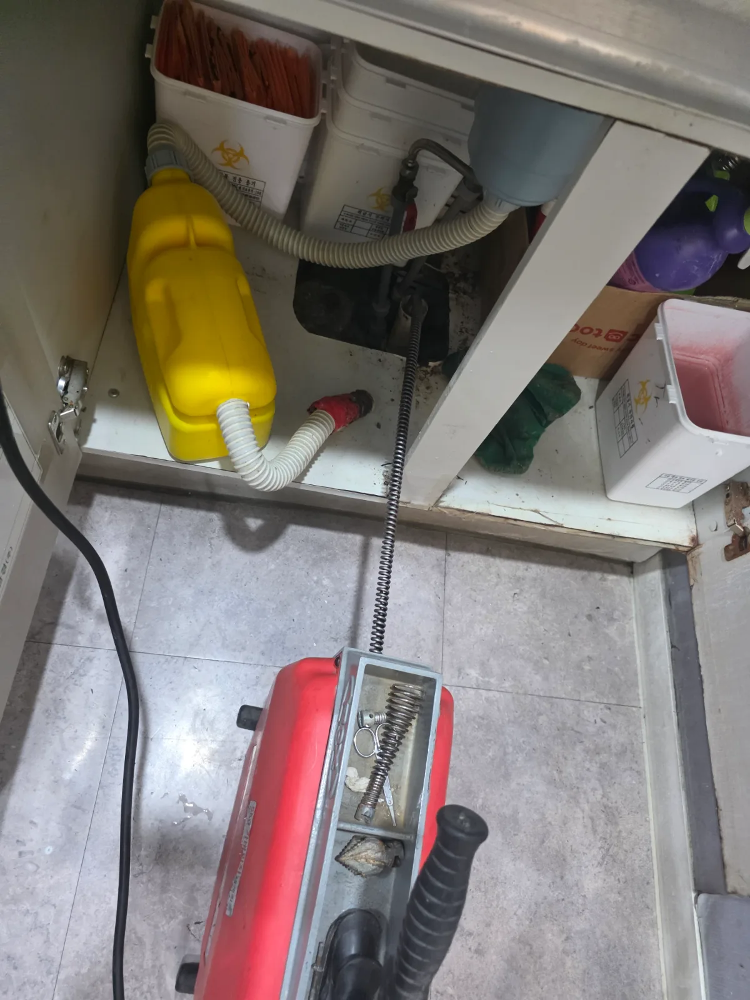
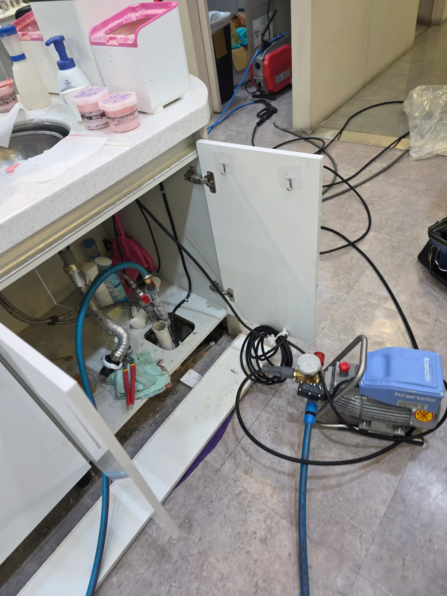

강남구 역삼동 하수구막힘, 현장 도착 후 진단
강남구 역삼동 병원에서 하수구역류가 발생했다는 긴급 요청을 접수한 신라건축설비는 스프링 관통 장비와 배관 고압세척기를 준비해 신속하게 현장으로 출동했습니다. 병원은 지속적인 위생 관리와 정상적인 시설 운영이 중요한 공간이므로 추가 역류와 오염 피해가 발생하지 않도록 먼저 배수시설의 사용을 조절하고 현장 상태를 점검했습니다. 숙련된 하수구막힘 전문 기술자가 배수 속도와 역류 지점, 연결 배관의 구조를 확인한 결과, 단순 석션이나 배수구 입구 청소만으로는 충분한 해결이 어려운 상태였습니다. 이에 스프링 관통으로 막힘 구간을 먼저 뚫고 고압세척으로 배관 내부를 청소하는 복합 작업을 진행했습니다.
1단계: 증상 확인과 필요한 장비 작업
배수구 주변과 연결 부속을 정리해 배관 내부로 장비를 투입할 수 있는 작업구를 확보했습니다. 전동 구동기에 스프링을 연결한 뒤 배관 굴곡과 저항을 확인하면서 막힌 구간을 향해 단계적으로 진입했습니다. 스프링을 무리하게 밀어 넣지 않고 회전력과 전진 깊이를 조절해 단단하게 뭉친 이물질을 분쇄하고 1차 물길을 확보했습니다. 이 과정에서 배관 내부의 저항 변화를 확인하며 실제 막힘 구간을 반복적으로 관통했습니다.

2단계: 원인 구간 처리와 정상 작동 확인
스프링 관통으로 물길이 열린 뒤에도 배관 벽면에는 하수구역류를 다시 일으킬 수 있는 잔존 이물질과 오염층이 남을 수 있습니다. 이를 제거하기 위해 고압세척 호스를 배관 안쪽으로 투입하고 수압을 이용해 벽면과 굴곡부를 세척했습니다. 노즐에서 분사되는 고압수가 오염물을 떨어뜨리는 동시에 배관 바깥 방향으로 밀어내도록 구간을 나누어 반복 작업했습니다. 마지막으로 충분한 양의 물을 흘려보내 배수 속도와 역류 여부를 확인하며 역삼동 병원 하수구막힘 작업을 마무리했습니다.

작업 결과와 재발 방지 안내
구동기와 스프링을 이용한 관통 작업에 이어 배관 고압세척을 진행한 결과, 정체됐던 물이 배관을 따라 원활하게 배출되고 하수구로 다시 올라오던 역류 증상도 해소됐습니다. 여러 사람이 반복적으로 사용하는 병원이나 상업시설의 배수관은 일반 가정보다 오염물이 빠르게 축적될 수 있습니다. 배수 속도가 느려지거나 악취와 꿀렁거리는 소리, 일시적인 역류가 나타난다면 완전히 막히기 전에 점검하는 것이 좋습니다. 단순 관통으로 중앙에 작은 물길만 확보하면 벽면의 오염물이 다시 떨어져 막힐 수 있으므로, 축적 상태가 심한 배관은 고압세척을 통해 내부를 함께 청소해야 재발 가능성을 줄일 수 있습니다.
신라건축설비는 강남구 역삼동을 비롯한 서울 전 지역과 경기권에 신속하게 출동하여 병원·상가·빌딩의 하수구막힘과 하수구역류를 전문적으로 해결합니다. 현장 상태에 따라 석션, 스프링 관통, 배관 내시경검사, 리지드 샤프트와 고압세척 장비를 복합적으로 운용합니다. 단순한 생활 막힘부터 공용배관·메인 오수관 진단, 정기 배관청소, 배관 보수·교체 및 대형 배관공사까지 자체적으로 대응할 수 있습니다.
최종 조치: 배수구 연결부를 개방한 뒤 전동 구동기와 스프링 관통기로 막힌 구간의 물길을 먼저 확보했습니다. 이후 배관 내부에 고압세척 호스를 투입해 벽면과 굴곡 구간에 남아 있던 잔존 이물질을 세척하고 반복 통수검사로 정상적인 배수 상태를 확인했습니다.
현장 방문 전 확인하는 비용과 작업 범위
신라건축설비는 현장 증상과 배관 구조를 확인한 뒤 필요한 작업과 예상 비용을 안내합니다. 단순 관통으로 해결되는지, 배관내시경·석션·고압세척 또는 추가 장비가 필요한지는 현장 상태에 따라 달라집니다. 출장비와 야간 작업비, 추가 장비 비용이 발생할 수 있는 경우 작업 전에 먼저 설명하고 동의를 받은 범위에서 진행합니다.
업체를 선택할 때 확인할 사항
무조건적인 ‘0원’ 표현보다 실제 작업 범위, 추가 비용 조건, 사용 장비와 사후 대응 기준을 확인하는 것이 중요합니다. 해결되지 않았을 때의 비용 기준과 작업 후 동일 증상 발생 시 점검 범위를 사전에 문의해두면 불필요한 분쟁을 줄일 수 있습니다.
강남구 하수구막힘 자주 묻는 질문
여러 배수구가 동시에 역류하면 공용배관 문제인가요?
병원 내부 배수시설에서 사용한 물이 원활하게 빠지지 않고 하수구 방향으로 다시 올라오는 역류 증상이 발생했습니다. 배관 내부의 흐름이 크게 저하되어 시설 사용에 불편이 생겼으며, 오염된 배수가 주변으로 넘칠 가능성도 있는 상태였습니다.처럼 증상이 나타나더라도 원인은 현장마다 다를 수 있습니다. 장비와 배관 구조를 확인한 뒤 필요한 작업 범위를 안내합니다.
고압세척이 항상 필요한가요?
작업 전 증상과 현장 여건을 확인해 예상 범위와 비용을 먼저 안내합니다. 변기 탈거, 장비 추가 투입 또는 공용배관 작업이 필요한 경우 고객 동의 없이 임의로 진행하지 않습니다.
작업 전 추가 비용을 확인할 수 있나요?
완료 후 정상 작동을 함께 확인하고 작업 범위에 따른 사후 안내를 드립니다. 동일 증상이 반복되면 현장 기록을 기준으로 원인을 다시 점검합니다.
하수구막힘 서울·경기 출동지역
신라건축설비는 강남구 역삼동 현장을 포함해 서울 25개 구와 경기도 31개 시·군의 배관 문제를 상담합니다. 현장 거리와 기사 배정 상황에 따라 출동 가능 여부를 먼저 안내드립니다.
서울 전 지역
강남구 · 강동구 · 강북구 · 강서구 · 관악구 · 광진구 · 구로구 · 금천구 · 노원구 · 도봉구 · 동대문구 · 동작구 · 마포구 · 서대문구 · 서초구 · 성동구 · 성북구 · 송파구 · 양천구 · 영등포구 · 용산구 · 은평구 · 종로구 · 중구 · 중랑구
경기도 주요 출동지역
수원시 · 용인시 · 고양시 · 화성시 · 성남시 · 부천시 · 남양주시 · 안산시 · 평택시 · 안양시 · 시흥시 · 파주시 · 김포시 · 의정부시 · 광주시 · 하남시 · 광명시 · 군포시 · 양주시 · 오산시 · 이천시 · 안성시 · 구리시 · 의왕시 · 포천시 · 양평군 · 여주시 · 동두천시 · 과천시 · 가평군 · 연천군